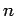

Next: Desktop Shortcuts Up: izpack-doc Previous: Writing Installation XML Files Contents
IZPACK can be easily integrated inside an Ant build process. To do so you first need to tell Ant that you would like to use IZPACK :
<!-- Allows us to use the IzPack Ant task -->
<taskdef name="izpack" classpath="${basedir}/lib/compiler.jar"
classname="com.izforge.izpack.ant.IzPackTask"/>
If you want to use the standalone compiler (and therefore don't need an IzPack installation for building), the task needs to be defined as follows:
<!-- Allows us to use the IzPack Ant task -->
<taskdef name="izpack" classpath="${basedir}/lib/standalone-compiler.jar"
classname="com.izforge.izpack.ant.IzPackTask"/>
Don't forget to add compiler.jar or standalone-compiler.jar to the classpath of the Ant process.
Then you can invoke IZPACK with the izpack task which takes the following parameters:
Here is a sample of the task invocation:
<!-- We call IzPack -->
<echo message="Makes the installer using IzPack"/>
<izpack input="${dist.dir}/IzPack-install.xml"
output="${dist.dir}/IzPack-install.jar"
installerType="standard"
basedir="${dist.dir}"
izPackDir="${dist.dir}/"/>
All system properties are available as
$SYSTEM_<variable> where <variable> is the actual name _BUT_ with
all separators replaced by '_'. Properties with null values
are never stored.
Examples:
$SYSTEM_java_version or $SYSTEM_os_name
When you conclude your installation with a FinishPanel, the user can
save the data for an automatic installation. With this data, he will be
able to run the same installation on another similar machine. In an
environment where many computers need to be supported this can save
a lot of time.
So run once the installation on a machine and save your automatic installation
data in auto-install.xml (that's just a sample). Then put this file in
the same directory as the installer on another machine. Run it with:
java -jar installer.jar auto-install.xml
It has reproduced the same installation :-)
You can add a picture on the language selection dialog by adding the following
resource : installer.langsel.img. GIF, JPEG and
PNG pictures are supported starting from J2SE 1.3.
It is possible to specify an optional picture to display on the left side of the installer. To do this, you just have to define a resource whose id is Installer.image. For instance,
<res id="Installer.image" src="nice-image.png" />will do that. If the resource isn't specified, no picture will be displayed at all. GIF, JPEG and PNG pictures are supported starting from J2SE 1.3.
You can also give a specific picture for a specific panel by using the
Installer.image.n resource names where  is the panel index. For
instance if you want a specific picture for the third panel, use
Installer.image.2 since the indexes start from 0.
The web installers allow your users to download a small installer that
does not contain the files to install. These files will be downloaded
from an HTTP server such as Apache HTTPD. If you have many
optional packs, this can save people's resources. Its very easy:
people download a small Jar file containing the installer, they launch
it and choose their packages. Then the installer will get the required
packages from individual Jar files located on a server, only
downloading those required. It's that simple.
To create a web installer, add the <webdir> element to the
<info> element (see section 2.3.2). The text must
be a valid, fully qualified URL for a direcory on the web server.
<info> <appname>Super extractor</appname> <appversion>2.1 beta 6</appversion> <url>http://www.superextractor.com/</url> <webdir>http://www.superextractor.com/download</url> </info>
You can force creation of a standard installer even if webdir is specified, by specifically creating a standard installer from the command line invocation or ant task (see ).
When installing, if the user is behind a firewall, attempting download the jar files may fail. If this happens, the user will be prompted to enter the name hostname and port of their firewall.
You may password protect the files using mechanisms provided by your web server, IzPack will prompt for a password at install time, when required.
IzPack is available in several languages. However you might want to
internationalize some additional parts of your installer. In particular you
might want this for the *InfoPanel and *LicencePanel. This is actually pretty
easy to do. You just have to add one resource per localization, suffixed with the
ISO3 language code. At runtime these panels will try to load a localized version.
For instance let's suppose that we use a HTMLInfoPanel. Suppose that we have it
in English, French and German. We want to have a French text for french users.
Here we add a resource pointing to the French text whose name is
HTMLInfoPanel.info_fra. And that's it ! English and German users (or
anywhere other than in France) will get the default text (denoted by
HTMLInfoPanel.info) and the French users will get the French version.
Same thing for the other Licence and Info panels.
To sum up : add _<iso3 code> to the resource name for
InfoPanel, HTMLInfoPanel, LicencePanel and
HTMLLicencePanel.
Thanks to Thorsten Kamann, it is possible to translate the packs names and descriptions. To do that, you have to define a special identifier in the elements of the XML installation file and add the related entries in the suitable langpacks. For instance if you have the following XML snippet:
<pack name="core" id="core.package" ...> <description/> </pack>then the related entries of the langpacks will look like this:
<str id="core.package" txt="Core Package"/> <str id="core.package.description" txt="The core package provides
Julien Ponge 2005-04-22